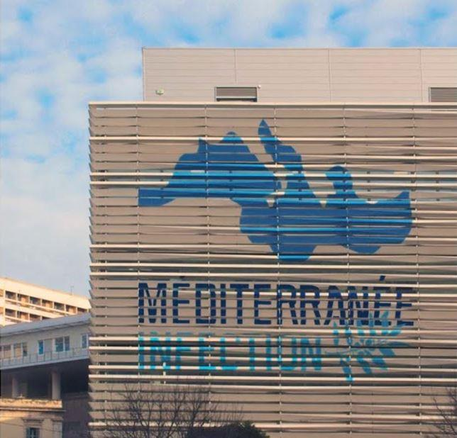
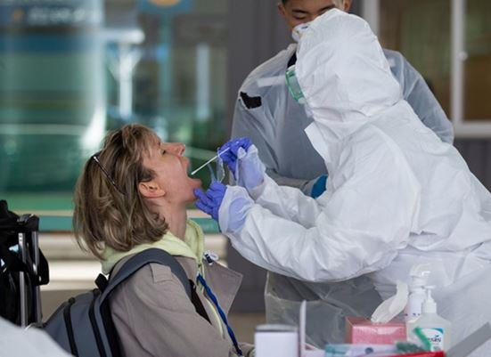
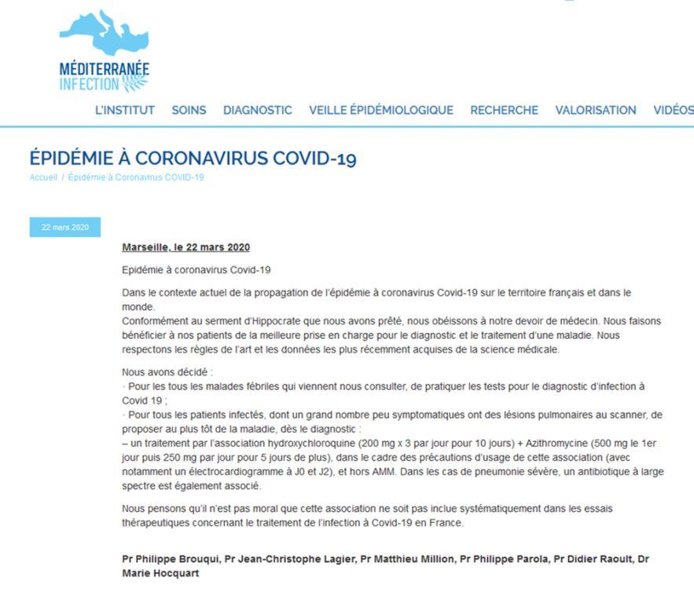
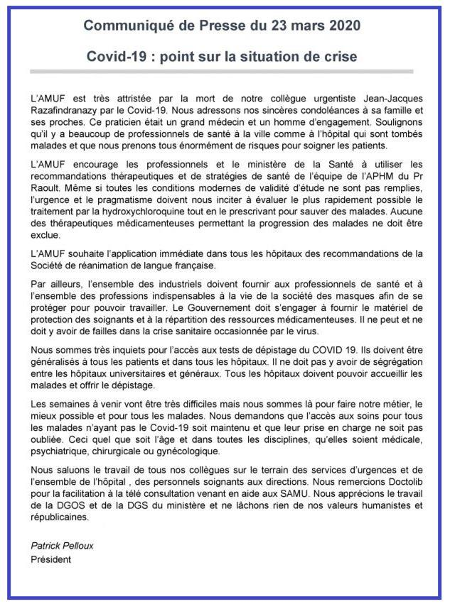
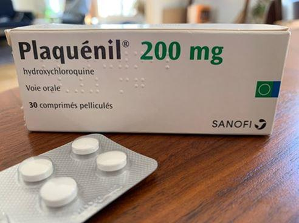

La position du gouvernement français relative au traitement préconisé par l’IHU Méditerranée-Infection face au Covid est en train de prendre les traits d’un immense scandale sanitaire. Les atermoiements des autorités s’accompagnent en effet d’un méticuleux travail de désinformation et de propagande qui laisse pantois. Petit tour d’horizon de la question pour celles et ceux qui auraient encore des doutes. Ou ne connaîtraient rien à ces sujets-là.
Petit rappel préliminaire. Méditerranée-Infection est plus grand centre de compétences en infectiologie clinique d’Europe. On personnalise beaucoup le débat autour de la figure du Pr Didier Raoult, son directeur. Mais ce sont 800 collaboratrices et collaborateurs qui y travaillent, dont une brochette de sommités mondiales dans leurs différents domaines comme la microbiologie et la virologie. Raoult lui-même, que les médias français aiment faire passer pour une espèce de farfelu, jouit d’une réputation hors pairs sur la scène scientifique mondiale, où il est considéré comme un des tous meilleurs dans son domaine.
L’IHU de Marseille a entre autres découvert de nouveaux micro-organismes, une nouvelle famille de virus et mis au point plusieurs traitements de référence utilisés actuellement à travers le monde. Il dispose en outre de la plus solide expérience au monde quant à la prescription d’hydroxychloroquine dans le cadre de nouvelles indications, comme dans le traitement (par eux mis au point) des infections à bactéries intracellulaires avec cette molécule. Bref, si nous devions prendre une métaphore, Marseille serait à l’infectiologie ce que Barcelone, le Real Madrid ou Liverpool sont au foot.
Depuis la confirmation qu’elle a obtenue quant à l’efficacité de la combinaison hydroxychloroquine + azithromycine contre le Covid, l’IHU de Marseille en préconise la prescription généralisée pour toutes les personnes infectées. Avec deux arguments-massue :
1/ Le traitement permet de réduire la charge virale en 6 jours (au lieu de vingt jours sans traitement), ce qui permet de réduire de manière significative le nombre de jours pendant lesquels une personne infectée est contagieuse. Avec un impact évident sur la progression de l’épidémie.
2/ Il permet en outre d’éviter que certaines personnes infectées développent des complications comme celles qui amènent aujourd’hui des foules de patients en situation péjorées dans les services d’urgence.
Le traitement est facile à mettre en œuvre, extrêmement bien toléré, il peut être dispensé aisément par les médecins de ville et tenez-vous bien …. ne coûte à peu près rien.
Eh bien, on est quand même content dans l’Hexagone d’avoir une des meilleures équipes au monde ! Et on ne va pas leur apprendre à jouer au foot, à ces Zidane, Messi et autres Ronaldo, non ?! Eh bien, ce serait mal connaître la France et l’industrie de la maladie.
Sur la tête
Depuis le début de l’épidémie, le gouvernement français met en œuvre tout ce qui est en son pouvoir pour mettre en échec les recommandations insistantes de Méditerranée-Infection :
Il adopte même à la place des directives qui sont aussi absurdes qu’indéfendable.
Il renonce au dépistage de masse par exemple, alors que l’OMS enjoint urgemment d’aller dans cette direction depuis des semaines. Avec pour résultats que des centaines de milliers (voire des millions1) de personnes porteuses du virus n’ont à ce stade aucun moyen de le savoir si elles sont infectées ou non !
Si vous souffrez des symptômes du Covid+ (les mêmes que ceux de nombreuses infections virales hivernales), vous êtes de priés de vous enfermer chez vous en attendant dans le meilleur des cas (heureusement le plus probable) que cela passe. Sinon, et c’est bien le risque, que votre situation s’aggrave, ce qui vous donne alors le droit de venir être soignés à l’hôpital et, au besoin, être mis sous assistance respiratoire.
D’où le message clair et insistant de Marseille : si la prescription d’hydroxychloroquine permet de prévenir ce risque d’aggravation, quel sens macabre peut-il bien être que celui de ne surtout rien faire en préférant attendre qu’il soit trop tard ?!
Les tenants de l’approche absurde qui prévaut mettent en avant l’incertitude qui règne encore quant à l’effet de ces substances, et le nombre à ce stade insuffisant de données disponibles, issues d’essais cliniques, pour en tirer des conclusions définitives. Ce qui est techniquement exact, mais médicalement faux et humainement monstrueux.
Attendre qu’il y ait des centaines de morts supplémentaires, tout en laissant les malheureuses équipes soignantes, démunies de tout (y compris des moyens de leur propre protection), galérer au front en prenant des risques insensés, voilà ce que le gouvernement français et les curieux aréopages d’experts qui le conseillent osent préconiser au nom de la pureté scientifique. Des directives sont même venues dissuader les médecins de ville de prescrire de l’hydroxychloroquine à leurs patients Covid+.
Banana Republic – Minister of Propaganda
La propagande gouvernementale a mobilisé deux grands fétiches pour justifier l’indéfendable : la « validité scientifique » d’une part et de l’autre la soi-disante « toxicité » de l’hydroxychloroquine.
Sur cette dernière question, souvent évoquée, rappelons que les chercheurs de Marseille sont les meilleurs connaisseurs actuels au monde de l’utilisation de cette molécule contre les virus et les bactéries ! Ils rappellent que c’est un médicament extrêmement bien toléré, dont le profil de risque est parfaitement connu, et qui sous la prescription et le suivi d’un médecin, ne pose aucun risque particulier. Le protocole qu’ils ont mis au point2 prévoit un électrocardiogramme à J0 et J2, les personnes souffrant sans le savoir d’arythmie cardiaque pouvait dans de très rares cas développer des effets secondaires indésirables.
Les médecins mettant en garde sur les plateaux télé contre les risques liés à la prescription d’hydroxychloroquine ont au moins deux points en communs :
a) aucun n’a ne serait-ce que le 1/10ème de l’expérience qu’ont les Marseillais avec cette molécule – ce qui inclut les membres de tous les conseils « scientifiques » à la botte du président.
b) aucun n’a jamais eu le niveau correspondant aux meilleurs clubs d’Europe. Ce sont au mieux d’honnêtes fouteux de Metz, Nice ou de Lorient. Au pire, des obscurs tâcherons de 3ème division qui viennent expliquer à tout va pourquoi le Real Madrid n’a jamais rien compris au foot…
Raoult et ses équipes ont beau s'époumoner pour essayer de faire comprendre au gouvernement français, aux autorités médicales et aux médias qu’ils ne font que faire de la médecine, comme le Real joue au foot. La base de la médecine, c’est depuis toujours de dépister le plus largement possible, ce qui permet ensuite de diagnostiquer puis de donner le meilleur traitement dont on dispose.
Accrochez-vous : le gouvernement français est parvenu à faire passer cette proposition pour un entêtement déraisonnable !
Science et lanternes
J’ai développé cette question de manière détaillée dans mon précédent article3 et j’y renvoie donc le lecteur qui ignorerait ces réalités. La plupart des gens ne savent pas il est vrai que nous vivons dans un monde où le système de santé est en état de corruption systémique. La recherche est massivement manipulée par les pharmas, qui infiltrent de surcroît les gouvernements, les parlements et les instances de contrôle comme l’agence de surveillance des médicaments. Les conflits d’intérêts, trafics d’influences et logiques criminelles en sont la marque de fabrique.
Si ces affirmations vous choquent, peut-être vous intéressera-t-il de savoir d’où elles proviennent ? Eh bien en fait du Centre d’éthique Edmond Saffra de l’Université de Harvard, des rédacteurs en chef des trois plus prestigieuses revues médicales, ou encore du parlement britannique. Si vous avez des doutes, prenez la peine de lire mon billet précédent, vous verrez, c'est bien instructif.
Désolé, je vais droit au but : un gouvernement et des autorités de santé qui sont eux-mêmes activement impliqués dans ce système de corruption, qui cautionnent des manipulations de données massives et une science aux bottes de l’industrie, et qui ferment les yeux sur une épouvantable létalité iatrogène – demandent avec aplomb qu’on leur fasse confiance parce que, n’est-ce pas, « on ne peut pas faire confiance au Real Madrid quand il s’agit de jouer au foot ».
Le baiser de la mort
Après avoir disqualifié toutes les « evidence » apportées par les Chinois, les Coréens, les Japonais et les Marseillais au sujet de l’efficacité de la chloroquine, le gouvernement exige maintenant d’autres données avant de prendre une décision. Comme ça a l’air raisonnable ! En fait, c’est un vrai baiser de la mort. D’abord, envers les centaines de Françaises et de Français qui en mourront faute d’avoir été soignés. Mais aussi parce que cela leur donne l’espoir de réserver un enterrement de première classe à l’hydroxychloroquine grâce à une glaçante manipulation.
Un éminent professeur de microbiologie de la région Rhône-Alpes m’a adressé le message suivant en réponse à mon article sur la mauvaise science. Lisez, vous allez comprendre :
Bonjour Monsieur,
Je suis un microbiologiste affligé par le niveau de mauvaise foi de mes collègues férus de méthodologie. Votre article que m'a fait passer une de mes amies m'a mis de bonne humeur ce matin. Vraiment je vous remercie pour cette analyse d'une finesse et d'une intelligence rares qui contrastent avec le faible niveau de ce qu'on peut entendre sur les plateaux de télévision ou dans la presse en général.
Vraiment il n'y a rien à rajouter, nous faisons tous ici le même constat sur nos collègues qui font de merveilleuses études randomisées pour monter que le nouvel antibiotique B au coût de traitement journalier à 300 euros est équivalent à l'antibiotique A au coût de traitement journalier à 10 euros (études de non-infériorité, ils ne cherchent même pas à démontrer que c'est meilleur.)
Une simple remarque : nous avons tous constaté que pour les patients qui présentent des forme graves et qui finissent en réanimation il n'y a plus grand chose à faire que de la réanimation. La maladie évolue pour son propre compte, le virus n'est souvent même plus détectable. Et donc on se doute déjà du résultat de l'évaluation du traitement Hydroxychloroquine - Azythromycine dans ces formes-là qui sera probablement la seule évaluation qui sera faite dans l'essai officiel : pas ou peu de bénéfice.
Ce que Méditerranée-Infection dit est différent : dépister tôt pour traiter tôt afin d'éviter cette évolution vers les formes sévères. Oups, j'avais oublié qu’on n’avait pas les moyens en France du dépistage de masse.... d'où la position peut-être pas si innocente de notre gouvernement
Et puis le coût. Traitement complet Remdesivir 900-1000 dollars (c'est sur le site de Gilead) versus Hydroxychloroquine-Azythromycine 15 euros... On revient à notre test antibiotique A versus antibiotique B du début.
En tous cas merci pour votre billet sur votre blog
Cordialement
Voyez comme c’est beau : au lieu de tirer profit du champion d’Europe qu’elle a sur son territoire, le gouvernement français conteste en dépit du bon sens et de toute pertinence scientifique les découvertes heureuses de l’IHU Méditerranée-Infection. Il met en échec l’utilisation d’un traitement extrêmement sûr qui pourrait sauver des centaines voire des milliers de vie. Il diffuse massivement une information fallacieuse et anxiogène sur le traitement. Il fait monter au créneau des porte-parole (médecins et chercheurs) qui jouent en comparaison dans l’équivalent des ligues de campagne et colportent en boucle les mêmes slogans baveux.
Puis, il monte et cautionne un projet de recherche scélérat qui, s’il est appliqué tel quel, montrera l’inefficacité de l’hydroxychloroquine en veillant à que le médicament ait été prescrit uniquement à des gens pour qui c’était déjà trop tard.
Sera-ce une révolte ?
Heureusement, un vent de colère se lève. C’est en effet peu dire que les décisions iniques du gouvernement français ne suscitent pas l’unanimité. En privant les Français infectés de la possibilité de se soigner (et donc en assurant par-là de nouvelles pertes), en enjoignant les médecins de ville à renoncer à prescrire le seul traitement utile dont on dispose face au Covid, le ministère de la santé tente aussi d’écraser sous sa botte la liberté de prescription inaliénable de tout médecin - excusez du peu !
L’Association des Médecins Urgentistes de France (spécialité particulièrement exposée aux risques du Covid et qui lui a déjà payé un lourd tribut dans les pays les plus touchés) a annoncé ce matin la mort de l’un d’entre eux, et lancé le solennel appel suivant :
« L’AMUF encourage les professionnels et le ministère de la Santé à utiliser les recommandations thérapeutiques et de stratégies de santé de l’équipe de l’APHM du Pr Raoult. Même si toutes les conditions modernes de validité d’étude ne sont pas remplies, l’urgence et le pragmatisme doivent nous inciter à évaluer le plus rapidement possible le traitement par la hydroxychloroquine tout en le prescrivant pour sauver des malades. Aucune des thérapeutiques médicamenteuses permettant la progression des malades ne doit être exclue.
Par ailleurs, l’ensemble des industriels doivent fournir aux professionnels de santé et à l’ensemble des professions indispensables à la vie de la société des masques afin de se protéger pour pouvoir travailler. Le Gouvernement doit s’engager à fournir le matériel de protection des soignants et à la répartition des ressources médicamenteuses. Il ne peut et ne doit y avoir de failles dans la crise sanitaire occasionnée par le virus.
Nous sommes très inquiets pour l’accès aux tests de dépistage du COVID 19. Ils doivent être généralisés à tous les patients et dans tous les hôpitaux. Il ne doit pas y avoir de ségrégation entre les hôpitaux universitaires et généraux. Tous les hôpitaux doivent pouvoir accueillir les malades et offrir le dépistage. »
Dans une tribune publiée sur Mediapart, Claude Escarguel, microbiologiste, ancien président du SNPHG, Anne Hessel, docteur en médecine et en chimie, et Pierre Larrouturou, député européen, rapporteur général du budget 2021 de l'Union européenne, interpellent le gouvernement en rappelant que « Toutes les grandes défaites se résument en deux mots : trop tard ! » N’attendons pas qu’il soit trop tard pour agir ! ajoutent-ils.
Le combat sera impitoyable. Disqualifier à tout prix Marseille et l’hydroxychloroquine est devenu une sorte d’urgence vitale pour les autorités. Ainsi qu'une singulière politique de la terre brûlée. Toute confirmation de l’efficacité précoce du médicament viendrait en effet mettre en lumière dans toute son implacable crudité la responsabilité directe du ministère dans le fiasco sanitaire et les morts dénombrés.
Paralyser la puissance industrielle
La passivité extrême du gouvernement français à lancer rapidement les actions nécessaires ne vous aura probablement pas échappé. Alors même que Sanofi se disait prêt à mettre des millions de doses d’hydroxychloroquine rapidement à sa disposition, le gouvernement a tout suspendu jusqu'à la publication des nouvelles « études ». Alors même que la production de tests de dépistage était une simple question d’organisation, le gouvernement ne s’est jamais engagé sérieusement dans cette direction. Aujourd’hui, voici ce qu’on trouvait publié dans Sud-Ouest :
Coronavirus. Un généticien propose de fabriquer des tests, l’administration refuse
Faute d’autorisation, un chercheur à la tête d’un laboratoire de recherche public de Lille s’est vu refuser de produire des tests de dépistage du Covid-19, alors que le pays en manque.
Il n’est pas le premier à s’insurger contre les lourdeurs administratives malgré l’urgence sanitaire liée au coronavirus. Philippe Froguel raconte son amère expérience à France Inter.
Ce généticien est à la tête d’un laboratoire de recherche public du CHRU de Lille, qui pratique régulièrement des tests PCR, utilisés notamment pour la grippe mais aussi pour dépister le Covid-19. Le 10 mars, face à l’ampleur de l’épidémie en France, il propose de fabriquer ces tests à condition de disposer des ingrédients nécessaires.
Réponse de l’administration : Il faut respecter les procédures, seul un biologiste médical étant officiellement habilité à lire les résultats, alors que le laboratoire de Philippe Froguel le fait depuis des années. Celui-ci espère toujours que sa demande aboutira.
3. Hydroxychloroquine : comment la mauvaise science est devenue une religion. http://jdmichel.blog.tdg.ch/archive/2020/03/24/hydroxychloroquine-comment-la-mauvaise-science-est-devenue-u-305255.html
Partager cette page